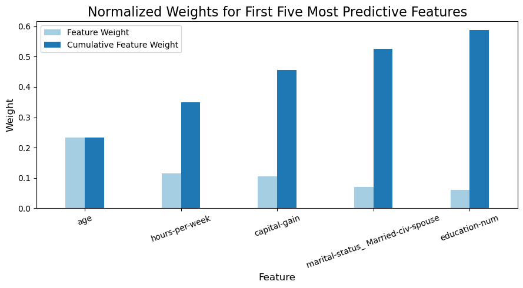

This is my first project of the Inro to Machine Learning with Tensorflow Nanodegree!
In this project, I will employ several supervised algorithms of my choice to accurately model individuals' income using data collected from the 1994 U.S. Census. I will then choose the best candidate algorithm from preliminary results and further optimize this algorithm to best model the data. My goal with this implementation is to construct a model that accurately predicts whether an individual makes more than $50,000.
This sort of task can arise in a non-profit setting, where organizations survive on donations. Understanding an individual's income can help a non-profit better understand how large of a donation to request, or whether or not they should reach out to begin with. While it can be difficult to determine an individual's general income bracket directly from public sources, we can (as we will see) infer this value from other publically available features.
Pyhon Version used in this notebook is:
Python 3.12.6
The dataset for this project originates from the UCI Machine
Learning Repository. The datset was donated by Ron Kohavi and Barry
Becker, after being published in the article "Scaling Up the
Accuracy of Naive-Bayes Classifiers: A Decision-Tree Hybrid". The
article by Ron Kohavi online.
The data we investigate here consists of small changes to the original
dataset, such as removing the fnlwgt feature and records
with missing or ill-formatted entries.
Featureset Exploration
It creates a "dummy" variable for each possible category of
each non-numeric feature. For example, assume someFeature
has three possible entries: A, B, or
C:
| someFeature | |
|---|---|
| 0 | B |
| 1 | C |
| 2 | A |
We then encode this feature into someFeature_A,
someFeature_B and someFeature_C:
| someFeature_A | someFeature_B | someFeature_C | |
|---|---|---|---|
| 0 | 0 | 1 | 0 |
| 1 | 0 | 0 | 1 |
| 2 | 1 | 0 | 0 |
CharityML, equipped with their research, knows individuals that make more than $50,000 are most likely to donate to their charity. Because of this, CharityML is particularly interested in predicting who makes more than $50,000 accurately. It would seem that using accuracy as a metric for evaluating a particular model's performace would be appropriate. Additionally, identifying someone that does not make more than $50,000 as someone who does would be detrimental to CharityML, since they are looking to find individuals willing to donate. Therefore, a model's ability to precisely predict those that make more than $50,000 is more important than the model's ability to recall those individuals. We can use F-beta score as a metric that considers both precision and recall:
$$ F_{\beta} = (1 + \beta^2) \cdot \frac{\text{precision} \cdot \text{recall}}{\left( \beta^2 \cdot \text{precision} \right) + \text{recall}} $$
In particular, when β = 0.5, more emphasis is placed on precision. This is called the F0.5 score (or F-score for simplicity).
Looking at the distribution of classes (those who make at most $50,000, and those who make more), it's clear most individuals do not make more than $50,000. This can greatly affect accuracy, since we could simply say "this person does not make more than $50,000" and generally be right, without ever looking at the data! Making such a statement would be called naive, since we have not considered any information to substantiate the claim. It is always important to consider the naive prediction for your data, to help establish a benchmark for whether a model is performing well. That been said, using that prediction would be pointless: If we predicted all people made less than $50,000, CharityML would identify no one as donors.
Accuracy measures how often the classifier makes the correct prediction. It’s the ratio of the number of correct predictions to the total number of predictions (the number of test data points).
Precision tells us what proportion of messages we classified as spam, actually were spam. It is a ratio of true positives (words classified as spam, and which are actually spam) to all positives (all words classified as spam, irrespective of whether that was the correct classificatio), in other words it is the ratio of
$$\text{Precision} = \frac{\text{True Positives}} {\text{True Positives} + \text{False Positives}}$$
Recall (sensitivity) tells us what proportion of messages that actually were spam were classified by us as spam. It is a ratio of true positives (words classified as spam, and which are actually spam) to all the words that were actually spam, in other words it is the ratio of
$$\text{Recall} = \frac{\text{True Positives}} {\text{True Positives} + \text{False Negatives}}$$
For classification problems that are skewed in their classification distributions, like in our case, for example, if we had 100 text messages and only 2 were spam and the remaining 98 weren't, accuracy is not a very good metric. We could classify 90 messages as not spam (including the 2 that were spam, but we classify them as not spam, hence they would be false negatives) and 10 as spam (all 10 false positives) and still get a reasonably good accuracy score. For such cases, precision and recall come in very handy. These two metrics can be combined to get the F1 score and the weighted average (harmonic mean) of the precision and recall scores. This score can range from 0 to 1, with 1 being the best possible F1 score(we take the harmonic mean when dealing with ratios).
The following are some of the supervised learning models that are currently available in scikit-learn that you may choose from:
The following code cell below load necessary Python libraries and load the census data.
Note the last column from this dataset, income, will be
the target label (whether an individual makes more than, or at most,
$50,000 annually). All other columns are features about each individual
in the census database.
# Import libraries necessary for this project
import numpy as np
import pandas as pd
from time import time
from IPython.display import display # Allows the use of display() for DataFrames
import matplotlib.pyplot as plt
# Import sklearn.preprocessing.StandardScaler
from sklearn.preprocessing import MinMaxScaler
# Import train_test_split
from sklearn.model_selection import train_test_split
# Import two metrics from sklearn - fbeta_score and accuracy_score, 'make_scorer'
from sklearn.metrics import fbeta_score, accuracy_score, make_scorer
# Import 'GridSearchCV'
from sklearn.model_selection import GridSearchCV
# Import a supervised learning model that has 'feature_importances_'
from sklearn.ensemble import RandomForestClassifier
# Import the three supervised learning models from sklearn
from sklearn.neighbors import KNeighborsClassifier
from sklearn.svm import SVC
from sklearn.linear_model import LogisticRegression
# Import functionality for cloning a model
from sklearn.base import clone
# Import supplementary visualization code visuals.py
import visuals as vs
# Pretty display for notebooks
%matplotlib inline# Load the Census dataset
df = pd.read_csv("data/census.csv")
# Success - Display the first record
display(df.head())| age | workclass | education_level | education-num | marital-status | occupation | relationship | race | sex | capital-gain | capital-loss | hours-per-week | native-country | income | |
|---|---|---|---|---|---|---|---|---|---|---|---|---|---|---|
| 0 | 39 | State-gov | Bachelors | 13.0 | Never-married | Adm-clerical | Not-in-family | White | Male | 2174.0 | 0.0 | 40.0 | United-States | <=50K |
| 1 | 50 | Self-emp-not-inc | Bachelors | 13.0 | Married-civ-spouse | Exec-managerial | Husband | White | Male | 0.0 | 0.0 | 13.0 | United-States | <=50K |
| 2 | 38 | Private | HS-grad | 9.0 | Divorced | Handlers-cleaners | Not-in-family | White | Male | 0.0 | 0.0 | 40.0 | United-States | <=50K |
| 3 | 53 | Private | 11th | 7.0 | Married-civ-spouse | Handlers-cleaners | Husband | Black | Male | 0.0 | 0.0 | 40.0 | United-States | <=50K |
| 4 | 28 | Private | Bachelors | 13.0 | Married-civ-spouse | Prof-specialty | Wife | Black | Female | 0.0 | 0.0 | 40.0 | Cuba | <=50K |
df.info()<class 'pandas.core.frame.DataFrame'>
RangeIndex: 45222 entries, 0 to 45221
Data columns (total 14 columns):
# Column Non-Null Count Dtype
--- ------ -------------- -----
0 age 45222 non-null int64
1 workclass 45222 non-null object
2 education_level 45222 non-null object
3 education-num 45222 non-null float64
4 marital-status 45222 non-null object
5 occupation 45222 non-null object
6 relationship 45222 non-null object
7 race 45222 non-null object
8 sex 45222 non-null object
9 capital-gain 45222 non-null float64
10 capital-loss 45222 non-null float64
11 hours-per-week 45222 non-null float64
12 native-country 45222 non-null object
13 income 45222 non-null object
dtypes: float64(4), int64(1), object(9)
memory usage: 4.8+ MB
In this dataset we have 14 features with diffrent datatypes. They are all complete regarding the non-null counts.
A cursory investigation of the dataset will determine how many individuals fit into either group, and will tell us about the percentage of these individuals making more than $50,000.
n_records# Total number of records
n_records = df.shape[0]
print("Total number of records: {}".format(n_records))Total number of records: 45222
n_greater_50k.df['income'].unique() ## looking into the values on incomearray(['<=50K', '>50K'], dtype=object)# Number of records where individual's income is more than $50,000
n_greater_50k = df[df['income'] == ">50K"]['age'].count() ## the count of any column in this filtering is the same so I chose the age to count
print("Individuals making more than $50,000: {}".format(n_greater_50k))Individuals making more than $50,000: 11208
n_at_most_50k.# Number of records where individual's income is at most $50,000
n_at_most_50k = df[df['income'] == "<=50K"]['age'].count() ## the count of any column in this filtering is the same so I chose the age to count
print("Individuals making at most $50,000: {}".format(n_at_most_50k))Individuals making at most $50,000: 34014
greater_percent.# Percentage of individuals whose income is more than $50,000
greater_percent = (n_greater_50k / n_records) * 100
print("Percentage of individuals making more than $50,000: {}%".format(greater_percent))---------------------------------------------------------------------------
NameError Traceback (most recent call last)
Cell In[9], line 2
1 # Percentage of individuals whose income is more than $50,000
----> 2 greater_percent = (n_greater_50k / n_records) * 100
3 print("Percentage of individuals making more than $50,000: {}%".format(greater_percent))
NameError: name 'n_greater_50k' is not defined
Before data can be used as input for machine learning algorithms, it must be cleaned, formatted, and restructured — this is typically known as preprocessing. Fortunately, for this dataset, there are no invalid or missing entries we must deal with, however, there are some qualities about certain features that must be adjusted. This preprocessing can help tremendously with the outcome and predictive power of nearly all learning algorithms.
A dataset may sometimes contain at least one feature whose values
tend to lie near a single number, but will also have a non-trivial
number of vastly larger or smaller values than that single number.
Algorithms can be sensitive to such distributions of values and can
underperform if the range is not properly normalized. With the census
dataset two features fit this description: capital-gain and
capital-loss.
Run the code cell below to plot a histogram of these two features. Note the range of the values present and how they are distributed.
# Split the data into features and target label
Y = df['income'] ## I renamed the target feature as convention that is Y
X = df.drop('income', axis = 1)
# Visualize skewed continuous features of original data
vs.distribution(df)
plt.show();/Users/waadalkatheri/Desktop/Finding-Charity-Donors-main/visuals.py:50: UserWarning: FigureCanvasAgg is non-interactive, and thus cannot be shown
fig.show()
For highly-skewed feature distributions such as
capital-gain and capital-loss, it is common
practice to apply a logarithmic
transformation on the data so that the very large and very small
values do not negatively affect the performance of a learning algorithm.
Using a logarithmic transformation significantly reduces the range of
values caused by outliers. Care must be taken when applying this
transformation however: The logarithm of 0 is undefined, so we must
translate the values by a small amount above 0 to apply the the
logarithm successfully.
Run the code cell below to perform a transformation on the data and visualize the results. Again, note the range of values and how they are distributed.
# Log-transform the skewed features
skewed = ['capital-gain', 'capital-loss']
features_log_transformed = pd.DataFrame(data = X)
features_log_transformed[skewed] = X[skewed].apply(lambda x: np.log(x + 1))
# Visualize the new log distributions
vs.distribution(features_log_transformed, transformed = True)/Users/waadalkatheri/Desktop/Finding-Charity-Donors-main/visuals.py:50: UserWarning: FigureCanvasAgg is non-interactive, and thus cannot be shown
fig.show()
In addition to performing transformations on features that are highly
skewed, it is often good practice to perform some type of scaling on
numerical features. Applying a scaling to the data does not change the
shape of each feature's distribution (such as capital-gain
or capital-loss above); however, normalization ensures that
each feature is treated equally when applying supervised learners. Note
that once scaling is applied, observing the data in its raw form will no
longer have the same original meaning, as exampled below.
Run the code cell below to normalize each numerical feature. We will
use sklearn.preprocessing.MinMaxScaler
for this.
# Initialize a scaler, then apply it to the features
scaler = MinMaxScaler() # default=(0, 1)
numerical = ['age', 'education-num', 'capital-gain', 'capital-loss', 'hours-per-week']
features_log_minmax_transform = pd.DataFrame(data = features_log_transformed)
features_log_minmax_transform[numerical] = scaler.fit_transform(features_log_transformed[numerical])
# Show an example of a record with scaling applied
display(features_log_minmax_transform.head(n = 5))| age | workclass | education_level | education-num | marital-status | occupation | relationship | race | sex | capital-gain | capital-loss | hours-per-week | native-country | |
|---|---|---|---|---|---|---|---|---|---|---|---|---|---|
| 0 | 0.301370 | State-gov | Bachelors | 0.800000 | Never-married | Adm-clerical | Not-in-family | White | Male | 0.667492 | 0.0 | 0.397959 | United-States |
| 1 | 0.452055 | Self-emp-not-inc | Bachelors | 0.800000 | Married-civ-spouse | Exec-managerial | Husband | White | Male | 0.000000 | 0.0 | 0.122449 | United-States |
| 2 | 0.287671 | Private | HS-grad | 0.533333 | Divorced | Handlers-cleaners | Not-in-family | White | Male | 0.000000 | 0.0 | 0.397959 | United-States |
| 3 | 0.493151 | Private | 11th | 0.400000 | Married-civ-spouse | Handlers-cleaners | Husband | Black | Male | 0.000000 | 0.0 | 0.397959 | United-States |
| 4 | 0.150685 | Private | Bachelors | 0.800000 | Married-civ-spouse | Prof-specialty | Wife | Black | Female | 0.000000 | 0.0 | 0.397959 | Cuba |
From the table in Exploring the Data above, we can see there are several features for each record that are non-numeric. Typically, learning algorithms expect input to be numeric, which requires that non-numeric features (called categorical variables) be converted. One popular way to convert categorical variables is by using the one-hot encoding scheme.
Additionally, as with the non-numeric features, we need to convert
the non-numeric target label, income to numerical values
for the learning algorithm to work. Since there are only two possible
categories for this label ("<=50K" and ">50K"), we can avoid using
one-hot encoding and simply encode these two categories as 0 and 1,
respectively.
def encode_income(value):
"""
Encoding the income feature to numerical, Set records with "<=50K" to 0 and records with ">50K" to 1.
Args:
value (str) either "<=50K" or "<=50K"
Returns:
0 if value is "<=50K" or 1 if value is ">50K"
"""
if value == "<=50K":
return 0
else:
return 1# Encode the 'income_raw' data to numerical values
Y_encoded = Y.apply(encode_income)
Y_encoded.sample(10) ## to ensure accurate encoding3277 1
19918 0
22366 0
1418 0
1278 0
3373 1
30732 0
11647 0
7835 0
38855 0
Name: income, dtype: int64# Performing One-hot encode the 'features_log_minmax_transform' data using pandas.get_dummies()
X_encoded = pd.get_dummies(features_log_minmax_transform)
# Print the number of features after one-hot encoding
encoded = list(X_encoded.columns)
print("{} total features after one-hot encoding.".format(len(encoded)))
# Uncomment the following line to see the encoded feature names
print(encoded)103 total features after one-hot encoding.
['age', 'education-num', 'capital-gain', 'capital-loss', 'hours-per-week', 'workclass_ Federal-gov', 'workclass_ Local-gov', 'workclass_ Private', 'workclass_ Self-emp-inc', 'workclass_ Self-emp-not-inc', 'workclass_ State-gov', 'workclass_ Without-pay', 'education_level_ 10th', 'education_level_ 11th', 'education_level_ 12th', 'education_level_ 1st-4th', 'education_level_ 5th-6th', 'education_level_ 7th-8th', 'education_level_ 9th', 'education_level_ Assoc-acdm', 'education_level_ Assoc-voc', 'education_level_ Bachelors', 'education_level_ Doctorate', 'education_level_ HS-grad', 'education_level_ Masters', 'education_level_ Preschool', 'education_level_ Prof-school', 'education_level_ Some-college', 'marital-status_ Divorced', 'marital-status_ Married-AF-spouse', 'marital-status_ Married-civ-spouse', 'marital-status_ Married-spouse-absent', 'marital-status_ Never-married', 'marital-status_ Separated', 'marital-status_ Widowed', 'occupation_ Adm-clerical', 'occupation_ Armed-Forces', 'occupation_ Craft-repair', 'occupation_ Exec-managerial', 'occupation_ Farming-fishing', 'occupation_ Handlers-cleaners', 'occupation_ Machine-op-inspct', 'occupation_ Other-service', 'occupation_ Priv-house-serv', 'occupation_ Prof-specialty', 'occupation_ Protective-serv', 'occupation_ Sales', 'occupation_ Tech-support', 'occupation_ Transport-moving', 'relationship_ Husband', 'relationship_ Not-in-family', 'relationship_ Other-relative', 'relationship_ Own-child', 'relationship_ Unmarried', 'relationship_ Wife', 'race_ Amer-Indian-Eskimo', 'race_ Asian-Pac-Islander', 'race_ Black', 'race_ Other', 'race_ White', 'sex_ Female', 'sex_ Male', 'native-country_ Cambodia', 'native-country_ Canada', 'native-country_ China', 'native-country_ Columbia', 'native-country_ Cuba', 'native-country_ Dominican-Republic', 'native-country_ Ecuador', 'native-country_ El-Salvador', 'native-country_ England', 'native-country_ France', 'native-country_ Germany', 'native-country_ Greece', 'native-country_ Guatemala', 'native-country_ Haiti', 'native-country_ Holand-Netherlands', 'native-country_ Honduras', 'native-country_ Hong', 'native-country_ Hungary', 'native-country_ India', 'native-country_ Iran', 'native-country_ Ireland', 'native-country_ Italy', 'native-country_ Jamaica', 'native-country_ Japan', 'native-country_ Laos', 'native-country_ Mexico', 'native-country_ Nicaragua', 'native-country_ Outlying-US(Guam-USVI-etc)', 'native-country_ Peru', 'native-country_ Philippines', 'native-country_ Poland', 'native-country_ Portugal', 'native-country_ Puerto-Rico', 'native-country_ Scotland', 'native-country_ South', 'native-country_ Taiwan', 'native-country_ Thailand', 'native-country_ Trinadad&Tobago', 'native-country_ United-States', 'native-country_ Vietnam', 'native-country_ Yugoslavia']
X_encoded.sample(10) ## to ensure accurate encoding let's take a look | age | education-num | capital-gain | capital-loss | hours-per-week | workclass_ Federal-gov | workclass_ Local-gov | workclass_ Private | workclass_ Self-emp-inc | workclass_ Self-emp-not-inc | ... | native-country_ Portugal | native-country_ Puerto-Rico | native-country_ Scotland | native-country_ South | native-country_ Taiwan | native-country_ Thailand | native-country_ Trinadad&Tobago | native-country_ United-States | native-country_ Vietnam | native-country_ Yugoslavia | |
|---|---|---|---|---|---|---|---|---|---|---|---|---|---|---|---|---|---|---|---|---|---|
| 22221 | 0.301370 | 0.533333 | 0.0 | 0.000000 | 0.397959 | False | False | True | False | False | ... | False | False | False | False | False | False | False | True | False | False |
| 12170 | 0.205479 | 0.533333 | 0.0 | 0.000000 | 0.397959 | False | False | True | False | False | ... | False | False | False | False | False | False | False | True | False | False |
| 2048 | 0.342466 | 0.733333 | 0.0 | 0.000000 | 0.397959 | False | False | True | False | False | ... | False | False | False | False | False | False | False | True | False | False |
| 17615 | 0.054795 | 0.333333 | 0.0 | 0.000000 | 0.397959 | False | False | True | False | False | ... | False | False | False | False | False | False | False | True | False | False |
| 28535 | 0.219178 | 0.600000 | 0.0 | 0.000000 | 0.244898 | False | False | True | False | False | ... | False | False | False | False | False | False | False | True | False | False |
| 837 | 0.136986 | 0.533333 | 0.0 | 0.000000 | 0.295918 | False | False | True | False | False | ... | False | False | False | False | False | False | False | True | False | False |
| 29007 | 0.342466 | 0.533333 | 0.0 | 0.000000 | 0.438776 | False | False | True | False | False | ... | False | False | False | False | False | False | False | True | False | False |
| 4612 | 0.342466 | 0.933333 | 0.0 | 0.905759 | 0.500000 | False | False | False | True | False | ... | False | False | False | False | False | False | False | True | False | False |
| 34694 | 0.136986 | 0.533333 | 0.0 | 0.000000 | 0.397959 | False | False | True | False | False | ... | False | False | False | False | False | False | False | True | False | False |
| 39437 | 0.095890 | 0.533333 | 0.0 | 0.000000 | 0.448980 | False | False | True | False | False | ... | False | False | False | False | False | False | False | True | False | False |
10 rows × 103 columns
Now all categorical variables have been converted into numerical features, and all numerical features have been normalized. As always, we will now split the data (both features and their labels) into training and test sets. 80% of the data will be used for training and 20% for testing.
Run the code cell below to perform this split.
# Split the 'features' and 'income' data into training and testing sets
X_train, X_test, y_train, y_test = train_test_split(X_encoded, Y_encoded, test_size = 0.2, random_state = 42)# Show the results of the split
print("Training set has {} samples.".format(X_train.shape[0]))
print("Testing set has {} samples.".format(X_test.shape[0]))Training set has 36177 samples.
Testing set has 9045 samples.
In this section, we will investigate four different algorithms, and determine which is best at modeling the data. Three of these algorithms will be supervised learners:
clf_A = KNeighborsClassifier() K neighbors.clf_B = SVC() Suppportive vectorclf_C = LogisticRegression() Logestic Regressionand the fourth algorithm is known as a naive predictor.
TP = np.sum(Y_encoded) # Counting the ones as this is the naive case. Note that 'Y_encoded' is the 'income_raw' data encoded to numerical values done in the data preprocessing step.
FP = Y_encoded.count() - TP # Specific to the naive case
TN = 0 # No predicted negatives in the naive case
FN = 0 # No predicted negatives in the naive case# Calculating accuracy, precision and recall
accuracy = (TP + TN) / (TP + TN + FP + FN)
recall = TP / (TP + FN)
precision = TP / (TP + FP)# Calculating F-score using the formula above for beta = 0.5 and correct values for precision and recall.
beta = 0.5
beta_sqr = np.square(beta)
f_score = (1 + beta_sqr) * ((precision * recall) / ((beta_sqr * precision) + recall))# Print the results
print("Naive Predictor: [Accuracy score: {:.4f}, F-score: {:.4f}]".format(accuracy, f_score))Naive Predictor: [Accuracy score: 0.2478, F-score: 0.2917]
Answer:
The naive predictor is a simple baseline model that always predicts a single outcome without considering the data. In this case, the naive predictor assumes that every individual earns more than $50K. Based on the calculations, the accuracy of this model is 0.2478, meaning it is correct only 24.78% of the time. The F-score, which balances precision and recall with a beta of 0.5, is calculated as 0.2917.
List three of the supervised learning models above that are appropriate for this problem that you will test on the census data. For each model chosen
Answer:
The three supervised learning models used are:
K-Nearest Neighbors
Real-World Applications:
Enhances investment decisions in finance.
Detects diseases early in healthcare.
Improves sales and user satisfaction in e-commerce.
Strengthens security and automation in computer vision.
Strengths:
Simple to implement and computationally fast.
Adapts easily to new data and generalizes well.
Requires fewer hyperparameters compared to other algorithms.
Weaknesses:
Struggles with high-dimensional data due to the curse of dimensionality.
Prone to overfitting if the value of k is not chosen carefully.
Reason for Choosing:
KNN is effective for classification tasks involving similarity-based decisions. Since this problem involves predicting potential donors, KNN can leverage the similarities in data to make accurate predictions. Its adaptability to new data makes it suitable for this task.
Support vector Machine
Real-World Applications:
Face detection by classifying face vs. non-face regions.
Document categorization in text and hypertext.
Gene classification and cancer detection in bioinformatics.
Widely used for handwriting recognition.
Strengths:
Works well when there is a clear margin of separation between classes.
Effective in high-dimensional spaces. -Performs well when the number of features exceeds the number of samples.
Memory-efficient.
Weaknesses:
Not suitable for very large datasets.
Performs poorly with noisy data or overlapping classes.
May underfit when the number of features far exceeds the training samples.
Reason for Choosing:
The dataset, after preprocessing and encoding, is high-dimensional. SVM is ideal for binary classification tasks in such scenarios as it constructs decision boundaries to separate potential donors effectively.
Logistic Regression
Real-World Applications:
Used in credit scoring with remarkable results.
Identifies relationships between micro-RNA and genes in medicine.
Processes and formats text data in text editors.
Predicts user behavior, such as changes in journey dates, in the travel industry.
Strengths:
Provides outputs with probabilistic interpretation.
Regularization techniques prevent overfitting.
Easily updated with new data using stochastic gradient descent.
Weaknesses:
Underperforms with multiple or non-linear decision boundaries.
Not flexible enough to naturally capture complex relationships.
Reason for Choosing: Logistic Regression works well for binary classification problems. It is simple, interpretable, and less prone to overfitting, making it an efficient choice for separating the data and predicting donor behavior.
To properly evaluate the performance of each model I've chosen, it's important that we create a training and predicting pipeline that allows you to quickly and effectively train models using various sizes of training data and perform predictions on the testing data.
def train_predict(learner, sample_size, X_train, y_train, X_test, y_test):
"""
Trains a model and predicts to return the results of performance metrics.
Args:
- learner: the learning algorithm to be trained and predicted on
- sample_size: the size of samples (number) to be drawn from training set
- X_train: features training set
- y_train: income training set
- X_test: features testing set
- y_test: income testing set
Returns:
results (set)
"""
results = {}
# Fit the learner to the training data using slicing with 'sample_size' using .fit(training_features[:], training_labels[:])
train_start = time() # Get start time
learner = learner.fit(X_train[:sample_size], y_train[:sample_size])
train_end = time() # Get end time
# Get the predictions on the test set(X_test), then get predictions on the first 300 training samples(X_train) using .predict()
pred_start = time() # Get start time
predictions_test = learner.predict(X_test)
predictions_train = learner.predict(X_train[:300])
pred_end = time() # Get end time
results['train_time'] = train_end - train_start # Calculate the training time
results['pred_time'] = pred_end - pred_start # Calculate the total prediction time
results['acc_train'] = accuracy_score(y_train[:300], predictions_train) # Compute accuracy on the first 300 training samples which is y_train[:300]
results['acc_test'] = accuracy_score(y_test, predictions_test) # Compute accuracy on test set using accuracy_score()
results['f_train'] = fbeta_score(y_train[:300], predictions_train, beta = 0.5) # Compute F-score on the the first 300 training samples using fbeta_score()
results['f_test'] = fbeta_score(y_test, predictions_test, beta = 0.5) # Compute F-score on the test set which is y_test
# Success
print("{} trained on {} samples.".format(learner.__class__.__name__, sample_size))
return results # Return the resultsIn this section, the default settings for each model are used, then one specific model is tuned in a later section.
# Initialize the three models
clf_A = KNeighborsClassifier()
clf_B = SVC(random_state=42)
clf_C = LogisticRegression(random_state=42)# Calculating the number of samples for 1%, 10%, and 100% of the training data, samples_1 is 1% of samples_100 ( the count of the values is set to be `int` and not `float`)
samples_100 = len(y_train)
samples_10 = int(0.1*samples_100)
samples_1 = int(0.01*samples_100) # Collect results on the learners
results = {}
for clf in [clf_A, clf_B, clf_C]:
clf_name = clf.__class__.__name__
results[clf_name] = {}
for i, samples in enumerate([samples_1, samples_10, samples_100]):
results[clf_name][i] = \
train_predict(clf, samples, X_train, y_train, X_test, y_test)KNeighborsClassifier trained on 361 samples.
KNeighborsClassifier trained on 3617 samples.
KNeighborsClassifier trained on 36177 samples.
SVC trained on 361 samples.
SVC trained on 3617 samples.
SVC trained on 36177 samples.
LogisticRegression trained on 361 samples.
LogisticRegression trained on 3617 samples.
LogisticRegression trained on 36177 samples.
# Run metrics visualization for the three supervised learning models chosen
vs.evaluate(results, accuracy, f_score)/Users/aqlamaai/Documents/Finding-Charity-Donors/visuals.py:122: UserWarning: Tight layout not applied. tight_layout cannot make Axes width small enough to accommodate all Axes decorations
pl.tight_layout()
interpretations on performance:
Model training time:
Accuracy Score on training:
F-score on training:
Model Prediction Times:
Accuracy score on testing:
F-score on testing:
In this final section, I will choose from the three supervised
learning models the best model to use on the data. then I
perform a grid search optimization for the model over the entire
training set (X_train and y_train) by tuning
at least one parameter to improve upon the untuned model's F-score.
Answer:
Based on the graph above, the model with the highest F-score on the testing set, when using 100% of the training data, is the SVC model.
Answer:
The Logistic Regression (LR) model is chosen for this task because it is straightforward and effective in predicting the outcome. The model learns to identify patterns in the data by analyzing the various features and their relationship to the target variable. Based on this, it can evaluate new data and predict whether a person is likely to donate.
The model works by assigning weights to each feature and combining them into a single value. If this value exceeds a certain threshold, the prediction will be that the person earns more than $50K; otherwise, the prediction will be that their income is less than $50K. Its simplicity and speed make it a practical and reliable solution for this problem.
In this section we Fine tune the LR model. Using grid search
(GridSearchCV) with at least one important parameter tuned
with at least 3 different values. Using the entire training set for
this.
# Initialize the classifier
clf = LogisticRegression()# Creating the parameters list to tune, using a dictionary
## C is the regularization strength
## penalty is the regularization type
## solver has to match the penalty
## max_iter is set because I got a ConvergenceWarning: The max_iter was reached which means the coef_ did not converge
parameters = {
'C': [0.1, 1, 10],
'penalty': ['l1', 'l2'],
'solver': ['liblinear', 'saga'],
'max_iter': [1000]
}# Make an fbeta_score scoring object using make_scorer()
scorer = make_scorer(fbeta_score, beta = 0.5)## Performing grid search on the classifier using 'scorer' as the scoring method using GridSearchCV()
grid_obj = GridSearchCV(estimator= clf, param_grid= parameters, scoring= scorer, cv = 5)
## Fiting the grid search object to the training data to find the optimal parameters using fit()
grid_fit = grid_obj.fit(X_train, y_train)
## Geting the estimator
best_clf = grid_fit.best_estimator_# Make predictions using the unoptimized and model
predictions = (clf.fit(X_train, y_train)).predict(X_test)
best_predictions = best_clf.predict(X_test)# Report the before-and-afterscores
print("Unoptimized model\n------")
print("Accuracy score on testing data: {:.4f}".format(accuracy_score(y_test, predictions)))
print("F-score on testing data: {:.4f}".format(fbeta_score(y_test, predictions, beta = 0.5)))
print("\nOptimized Model\n------")
print("Final accuracy score on the testing data: {:.4f}".format(accuracy_score(y_test, best_predictions)))
print("Final F-score on the testing data: {:.4f}".format(fbeta_score(y_test, best_predictions, beta = 0.5)))Unoptimized model
------
Accuracy score on testing data: 0.8456
F-score on testing data: 0.7103
Optimized Model
------
Final accuracy score on the testing data: 0.8449
Final F-score on the testing data: 0.7092
The table below shows the results of the optimzation done on the LR model.
| Metric | Unoptimized Model | Optimized Model |
|---|---|---|
| Accuracy Score | 0.8456 | 0.8449 |
| F-score | 0.7103 | 0.7092 |
Answer:
When comparing the optimized model to the unoptimized one, there are only minor differences in performance. The optimized model shows a slight improvement in both accuracy and F-score, though the gains are minimal.
However, when comparing the optimized model to the naive predictor, the difference is significant. The naive predictor achieves an accuracy of only 0.2478, whereas the optimized model reaches an accuracy of 0.8449. Similarly, the F-score of the optimized model is considerably higher, demonstrating its superior performance over the naive baseline.
An important task when performing supervised learning on a dataset like the census data we study here is determining which features provide the most predictive power. By focusing on the relationship between only a few crucial features and the target label we simplify our understanding of the phenomenon, which is most always a useful thing to do.
In the case of this project, that means we wish to identify a small number of features that most strongly predict whether an individual makes at most or more than $50,000.
A scikit-learn classifier that is random forests has a
feature_importance_ attribute, which is a function that
ranks the importance of features according to the chosen classifier.
I fit this classifier to training set and use this attribute to determine the top 5 most important features for the census dataset.
When Exploring the Data, it was shown there are thirteen available features for each individual on record in the census data.
Of these thirteen records, let's determine which five features do you believe to be most important for prediction, and in what order would I rank them and why?
df.columnsIndex(['age', 'workclass', 'education_level', 'education-num',
'marital-status', 'occupation', 'relationship', 'race', 'sex',
'capital-gain', 'capital-loss', 'hours-per-week', 'native-country',
'income'],
dtype='object')Answer:
Based on the important features, I would select the following five as the most significant for prediction, listed in order of relevance, along with their reasoning:
occupation: Individuals in higher-level or specialized
roles within a company typically earn higher incomes.workclass: The type of employment or sector often
influences earning potential significantly.marital-status: Married individuals may have different
spending patterns, potentially impacting disposable income levels.hours-per-week: The number of hours worked directly
contributes to the total annual income, with more hours generally
leading to higher earnings.education_level: Higher levels of education are often
associated with better-paying jobs and increased earning capacity.A scikit-learn supervised learning algorithm that has a
feature_importance_ attribute availble for it would be the
RandomForest classifier. This attribute is a function that ranks the
importance of each feature when making predictions based on the chosen
algorithm.
## Training the supervised model on the training set using .fit(X_train, y_train)
model = RandomForestClassifier()
model = model.fit(X_train, y_train)
## Extract the feature importances using .feature_importances_
importances = model.feature_importances_
# Plot
vs.feature_plot(importances, X_train, y_train)
Interprestions:
Observing the visualization created above which displays the five most relevant features for predicting if an individual makes at most or above $50,000. Let's discuss how my answer compares to the actual important features.
Answer:
My selection closely matched the actual feature importance, with a few differences. Specifically, occupation and workclass did not carry as much weight as I initially anticipated.
The predictions for marital status and hours-per-week were accurate, as their significance was confirmed by the visualization. Marital status has a weight of 0.5 or higher, and hours-per-week contributes significantly with weights of 0.3 or more.
Interestingly, education level did not appear as an important feature in the visualization. Instead, education num emerged as the most influential feature overall, reinforcing the idea that education plays a critical role in determining income.
How does a model perform if we only use a subset of all the available features in the data? With less features required to train, the expectation is that training and prediction time is much lower — at the cost of performance metrics.
From the visualization above, we see that the top five most important features contribute more than half of the importance of all features present in the data. This hints that we can attempt to reduce the feature space and simplify the information required for the model to learn.
Let's use the same optimized model found earlier, and train it on the same training set with only the top five important features.
# Reduce the feature space
X_train_reduced = X_train[X_train.columns.values[(np.argsort(importances)[::-1])[:5]]]
X_test_reduced = X_test[X_test.columns.values[(np.argsort(importances)[::-1])[:5]]]
# Train on the "best" model found from grid search earlier
clf = (clone(best_clf)).fit(X_train_reduced, y_train)
# Make new predictions
reduced_predictions = clf.predict(X_test_reduced)# Report scores from the final model using both versions of data
print("Final Model trained on full data\n------")
print("Accuracy on testing data: {:.4f}".format(accuracy_score(y_test, best_predictions)))
print("F-score on testing data: {:.4f}".format(fbeta_score(y_test, best_predictions, beta = 0.5)))
print("\nFinal Model trained on reduced data\n------")
print("Accuracy on testing data: {:.4f}".format(accuracy_score(y_test, reduced_predictions)))
print("F-score on testing data: {:.4f}".format(fbeta_score(y_test, reduced_predictions, beta = 0.5)))Final Model trained on full data
------
Accuracy on testing data: 0.8449
F-score on testing data: 0.7092
Final Model trained on reduced data
------
Accuracy on testing data: 0.8284
F-score on testing data: 0.6731
Results:
| Metric | Final Model (Full Data) | Final Model (Reduced Data) |
|---|---|---|
| Accuracy = | 0.8449 | 0.8284 |
| F-score | 0.7092 | 0.6731 |
Answer:
The final model trained on the complete dataset (using all features) achieves slightly better performance, with an accuracy of 0.8449 compared to 0.8284 and an F-score of 0.7092 compared to 0.6731, when compared to the model trained on the reduced dataset with only five features.
If training time were a significant consideration, I would opt for the reduced dataset. While it results in a small decrease in accuracy and F-score, using fewer features would require less computational power and resources, making it a more efficient choice in resource-constrained scenarios.